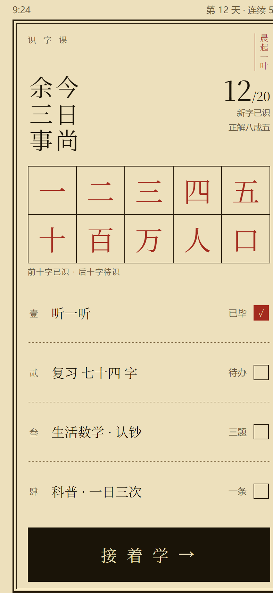
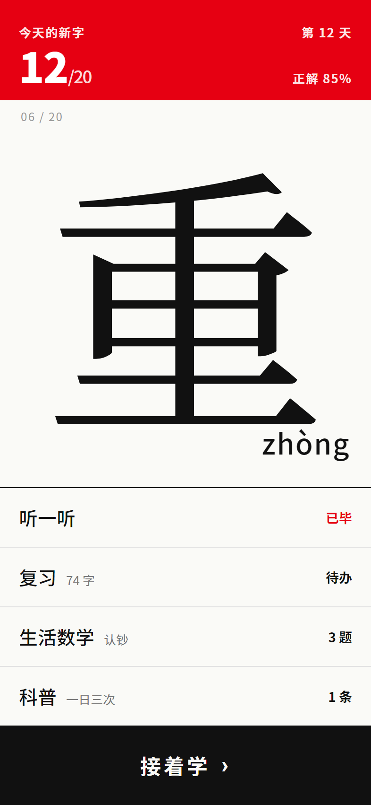
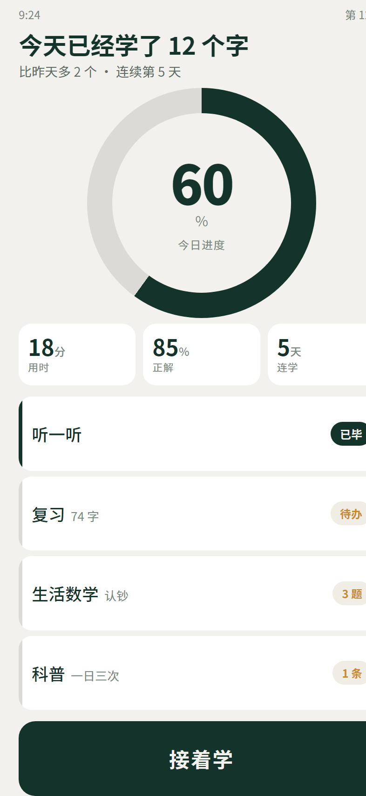

三个方向，选一个
这三版不是同一个骨架换颜色——它们的
结构、配色逻辑、气质都不同
。
选定后我按那一版重做全部六屏，再出 APK。

A · 刻本界栏
传统 / 有出处
把 App 做成「一本书的一叶」：版框（外粗内细）、
界栏
（今天的字一字一格）、 天头地脚、朱批。汉字本来就是这么被教的，这个方向有真实出处，不是编的。
气质：
庄重、像课本、有文化根基，老人会觉得「这是在正经读书」。
风险：纸色偏黄，你若嫌土就还是土。

B · 极简符号
现代 / 强识别
佐藤可士和那一路：
一个字占掉半个版面
，纯色满铺，零装饰零渐变零阴影。 字本身就是图形，不再需要插画。整屏只有白、墨、朱三色。
气质：
干净、有力量、绝对不像 AI 生成，一眼能记住。
风险：可能太「设计」，老人未必觉得亲切。

C · 关怀数据
现代 / 情绪友好
先回答「我今天做得怎么样」，再列任务：大圆环 + 三个数字（用时/正解/连学）， 任务退到下面。
刻意不用红色
，不制造压力。墨绿 + 琥珀，避开暖纸赭红。
气质：
温和、有反馈感、像健康 App，老人不容易有挫败感。
风险：信息多一档，可能不如前两个简洁。